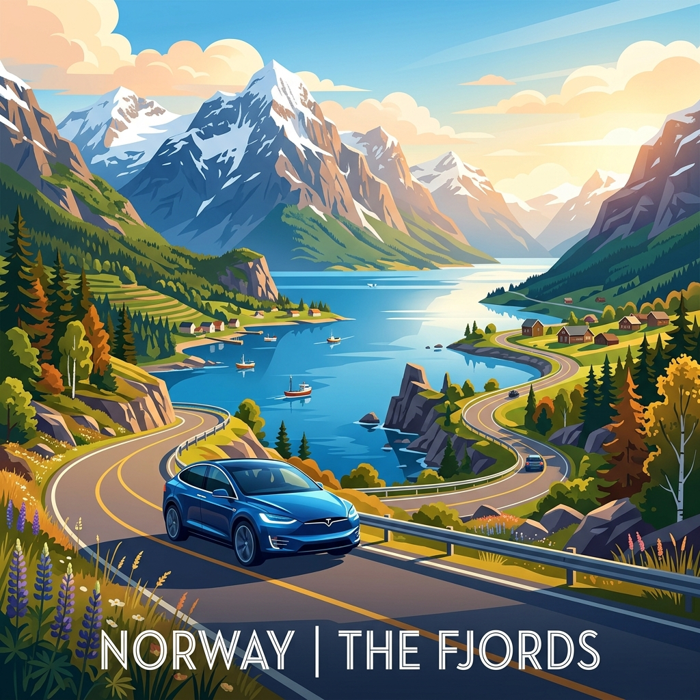
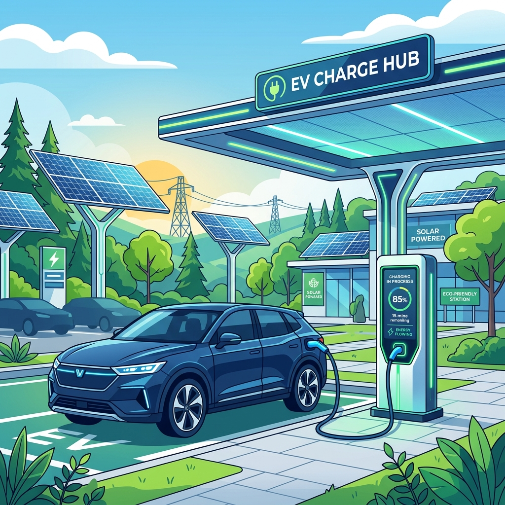

🔍 搜索结果

2026 欧洲家庭自驾旅行手册（Family Roadbook V4.0）
旅行概述（Trip Overview）
旅行时间
- 2026-07-22 ～ 2026-08-03（13天）
出发地点
- Stavanger, Norway
本次旅行目标
- 家庭暑假旅行
- 参加 ICMCF Berlin 会议
- 尽量保证 Noora 作息稳定
- 旅行节奏轻松，不赶路
总体路线（Route Overview）
Stavanger
↓
Kristiansand
↓
Color Line Ferry
↓
Hirtshals
↓
Silkeborg
↓
Lübeck
↓
Berlin
↓
Neumünster
↓
Aalborg
↓
Fjord Line Ferry
↓
Kristiansand
↓
Stavanger
家庭成员与作息（Family）
家庭成员
- 成人 ×2
- Noora（约21个月）
Noora 作息目标
- 08:00 起床
- 12:30 午睡
- 18:00 晚餐
- 20:00 睡觉
随车日常物品清单

车辆与充电策略（Vehicle）
车型信息
- 2024 Hyundai Kona Electric Long Range
品牌充电优先级
Tesla Supercharger → IONITY → Circle K Charge → Recharge
SOC 电量建议
- 酒店出发（Departure SOC）：90%+
- 午餐充电：40%左右
- 充至（Charge target）：80%
- 抵达酒店（Arrival SOC）：20%~30%
Kona EV 充电与电量概览 (已精确计算)
| 天数（Day） | 路线（Route） | 推荐充电站（Recommended Charger） | 预计电量变化（Expected SOC） |
|---|---|---|---|
| Day 01 | Stavanger → Kristiansand | Rona 8-10 Recharge | 出发 95% → 抵达 30% |
| Day 02 | Kristiansand local | Dyreparken Parking EV Charger | 出发 80% → 抵达 60% |
| Day 03 | Kristiansand → Silkeborg | Norlys Silkeborg (Søtorvet) | 出发 95% → 抵达 40% |
| Day 04 | Silkeborg → Lübeck | IONITY Hüttener Berge, Allego Lübeck | 出发 90% → 抵达 30% |
| Day 05 | Lübeck → Berlin | IONITY Prignitz Ost, Mondrian Garage | 出发 90% → 抵达 30% |
| Day 06-10 | Berlin local | Mondrian Garage Wallbox | 电量维持 50% - 80% |
| Day 11 | Berlin → Neumünster | Tesla Supercharger Wittenburg, Hotel Prisma | 出发 90% → 抵达 30% |
| Day 12 | Neumünster → Aalborg | IONITY Horsens, Danhostel/Marina | 出发 90% → 抵达 25% |
| Day 13 | Aalborg → Stavanger | Fjord Line On-board charging, Rona Recharge | 出发 90% → 抵达 30% |
轮渡信息（Ferries）
去程（Color Line）
- 航线：Kristiansand → Hirtshals
- 起航时间（Departure）：2026-07-24 08:00
- 抵达时间（Arrival）：11:15
- 开始检票（Check-in）：07:00
- 乘员：2 Adults + 1 Child
- 车型配置：Passenger Car（≤5m）
- 车牌号码（Registration）：EH79780
- 预订编号（Booking Reference）：WXM7982
- PDF门票：点击查看 Color Line 预订确认 PDF 门票
去程待办事项（TODO）
回程（Fjord Line）
- 航线：Hirtshals → Kristiansand
- 起航时间（Departure）：2026-08-03 09:45
- 抵达时间（Arrival）：12:10
- 开始检票（Check-in）：08:45
- 特殊服务：已预订船上 EV 充电（EV Charging Booked）
- 车牌号码（Registration）：EH79780
- 预订编号（Booking Reference）：13080265
- PDF门票：点击查看 Fjord Line 预订确认 PDF 门票
回程待办事项（TODO）
住宿信息（Hotels）
预订概览
| 日期 | 酒店/住宿名称 | 地址 |
|---|---|---|
| 22–24 Jul | Kristiansand Airbnb | Marikåpeveien 47, Kristiansand, Agder 4634 (Apple Map) |
| 24–25 Jul | Silkeborg Airbnb | Slienvej 51, Silkeborg 8600 (Apple Map) |
| 25–26 Jul | Lübeck Hotel | Herrendamm 2-4, Lübeck, SH 23556 (Apple Map) |
| 26 Jul–1 Aug | Berlin Hotel | Markgrafenstrasse 16-16a, Berlin 10969 (Apple Map) |
| 1–2 Aug | Neumünster Hotel | Max-Johannsen-Brücke 1, Neumünster 24537 (Apple Map) |
| 2–3 Aug | Aalborg Hotel | 50 Skydebanevej, Aalborg 9000 (Apple Map) |
住宿详细卡片（Hotel Details）
1. Kristiansand Airbnb (22-24 Jul)
- 地址：Marikåpeveien 47, Kristiansand, Agder 4634 (Apple Map)
- 概述（Overview）：位于Justneshalvøya半岛的现代住宅，环境优美安静，非常适合家庭入住。靠近湖泊与森林步道。
- 停车（Parking）：房屋自带专用免费停车位（Private driveway parking）。
- EV充电（EV Charging）：房屋未确认充电桩（TODO），但附近Rona和Sørlandsparken有大量超级充电桩。
- 周边超市（Nearby Supermarket）：Joker Justvik (Grostølveien 4D, 距离约 1.2 km，步行15分钟)。
- 周边药店（Nearby Pharmacy）：Apotek 1 Rona (Rona 8-10, 距离约 2.8 km，车程5分钟)。
- 周边医院（Nearby Hospital）：Sørlandet Sykehus Kristiansand (Egsveien 100, 距离约 6.5 km，车程10分钟)。
- 周边游乐场（Nearby Playground）：Justneshalvøya半岛内有20多个高品质儿童游乐场（如Vikingborga、Julius），且有非常适合推婴儿车的森林木雕步道 Trollstien。
- 周边咖啡馆（Nearby Coffee）：Espresso House Rona (Rona 8)。
- 周边餐馆（Nearby Restaurant）：Søm Pizza (Sømveien 80, 距离约 3 km) 或前往市中心餐饮区。
- 步行地图（Walking Map）：OpenStreetMap Link
- 街景占位符（Street View placeholder）：Google StreetView
2. Silkeborg Airbnb (24-25 Jul)
- 地址：Slienvej 51, Silkeborg 8600 (Apple Map)
- 概述（Overview）：位于Silkeborg Gødvad区的舒适住宅，绿树环绕，极具丹麦生活气息。
- 停车（Parking）：房屋前私人专用免费停车位。
- EV充电（EV Charging）：房屋不带充电桩，可使用Gødvad或市区Clever/Norlys公共充电桩。
- 周边超市（Nearby Supermarket）：REMA 1000 Gødvad (Arendalsvej 29, 距离约 1.0 km)。
- 周边药店（Nearby Pharmacy）：Silkeborg Svane Apotek (Søtorvet 1, 距离约 2.5 km)。
- 周边医院（Nearby Hospital）：Regionshospitalet Silkeborg (Falkevej 1-3, 距离约 2.3 km) - 紧急时拨打112。
- 周边游乐场（Nearby Playground）：Indelukket Playground (Åhave Allé 9B, 距离约 3.5 km，拥有大型滑梯和自然探险乐园)。
- 周边咖啡馆（Nearby Coffee）：市中心 Torvet 广场周边的咖啡馆。
- 周边餐馆（Nearby Restaurant）：Silkeborg 市中心餐馆（如 Cafe Evald 或 Babas Pizza）。
- 步行地图（Walking Map）：OpenStreetMap Link
- 街景占位符（Street View placeholder）：Google StreetView
3. Lübeck Hotel (25-26 Jul)
- 地址：Herrendamm 2-4, Lübeck, SH 23556 (Apple Map)
- 概述（Overview）：位于吕贝克市郊的舒适型酒店，靠近A1高速公路，前往历史老城区非常便利。
- 停车（Parking）：酒店专属收费停车场（10 EUR/天）。
- EV充电（EV Charging）：酒店内配备EV充电站，或使用附近超充站（Bei der Lohmühle 11A）。
- 周边超市（Nearby Supermarket）：CITTI-PARK Lübeck (Herrenholz 14, 距离约 3.0 km，大型购物中心内有Aldi和Rewe)。
- 周边药店（Nearby Pharmacy）：Apotheke im CITTI-PARK (Herrenholz 14)。
- 周边医院（Nearby Hospital）：UKSH Campus Lübeck (Ratzeburger Allee 160) 或 Sana Kliniken Lübeck。
- 周边游乐场（Nearby Playground）：Drägerpark Playground (Drägerpark，靠近水边，适合散步和儿童玩耍)。
- 周边咖啡馆（Nearby Coffee）：酒店自带餐厅或老城区咖啡馆。
- 周边餐馆（Nearby Restaurant）：酒店自带餐厅，提供德式及意式菜肴。
- 步行地图（Walking Map）：OpenStreetMap Link
- 街景占位符（Street View placeholder）：Google StreetView
4. Berlin Hotel (26 Jul - 1 Aug)
- 地址：Markgrafenstrasse 16-16a, Berlin 10969 (Apple Map)
- 概述（Overview）：临近查理检查哨的高端公寓式酒店，房间配备小厨房，非常适合带幼儿家庭长期居住。
- 停车（Parking）：酒店专属地下车库（收费25 EUR/天）。
- EV充电（EV Charging）：地下车库内配备EV充电桩（Wallbox）。
- 周边超市（Nearby Supermarket）：Wolt Market (Markgrafenstraße 58, 距离约 100米) 或 EDEKA Checkpoint Charlie (Friedrichstraße 207-208, 约400米)。
- 周边药店（Nearby Pharmacy）：Checkpoint Apotheke (Friedrichstraße 207, 约400米)。
- 周边医院（Nearby Hospital）：Vivantes Klinikum Am Urban (Dieffenbachstraße 1, 距离约 2.5 km)。
- 周边游乐场（Nearby Playground）：Theodor-Wolff-Park Playground (步行2分钟，有沙坑 and 基础滑梯) 或 Gleisdreieck Park Playground (约1.8 km)。
- 周边咖啡馆（Nearby Coffee）：Espresso House (Friedrichstraße 50)。
- 周边餐馆（Nearby Restaurant）：酒店周边有大量简餐、意式和德式餐厅（如 Ristorante A Mano）。
- 步行地图（Walking Map）：OpenStreetMap Link
- 街景占位符（Street View placeholder）：Google StreetView
5. Neumünster Hotel (1-2 Aug)
- 地址：Max-Johannsen-Brücke 1, Neumünster 24537 (Apple Map)
- 概述（Overview）：位于新明斯特北部的舒适酒店，临近Holstenhallen展览馆，提供桑拿和免费无线网。
- 停车（Parking）：酒店专属免费停车场。
- EV充电（EV Charging）：酒店内部配备EV充电桩。
- 周边超市（Nearby Supermarket）：Aldi Nord (Rendsburger Str. 90) 或 Lidl (Rendsburger Str. 84, 距离约 1.2 km)。
- 周边药店（Nearby Pharmacy）：Holstein Apotheke (Rendsburger Str. 119, 距离约 1.5 km)。
- 周边医院（Nearby Hospital）：Friedrich-Ebert-Krankenhaus (Friesenstraße 11, 距离约 2.5 km)。
- 周边游乐场（Nearby Playground）：酒店内有安静的草坪花园，或前往 Tierpark Neumünster (Geerdtsstraße 100，有巨大的儿童探险游乐场)。
- 周边咖啡馆（Nearby Coffee）：酒店内 Campino's Restaurant 咖啡座。
- 周边餐馆（Nearby Restaurant）：酒店内 Campino's 餐厅，提供北德特色菜。
- 步行地图（Walking Map）：OpenStreetMap Link
- 街景占位符（Street View placeholder）：Google StreetView
6. Aalborg Hotel (2-3 Aug)
- 地址：50 Skydebanevej, Aalborg 9000 (Apple Map)
- 概述（Overview）：靠近Limfjord湾和游艇码头的舒适青年旅舍，配有大型绿地和儿童户外活动空间。
- 停车（Parking）：旅舍提供专属免费露天停车场。
- EV充电（EV Charging）：码头及露营区公共充电站（Clever/Norlys）。
- 周边超市（Nearby Supermarket）：Meny Vestbyen (Otto Mønsteds Vej 1, 距离约 1.5 km)。
- 周边药店（Nearby Pharmacy）：Kastetvejs Apotek (Kastetvej 43, 距离约 1.8 km)。
- 周边医院（Nearby Hospital）：Aalborg Universitetshospital (Hobrovej 18-22, 距离约 4.5 km)。
- 周边游乐场（Nearby Playground）：旅舍自带户外滑梯和秋千，或前往 Vestre Fjordpark (Skydebanevej 14, 距离约 800米，有大型水上乐园和沙坑)。
- 周边咖啡馆（Nearby Coffee）：旅舍咖啡吧，或前往 Aalborg Vestby 城区咖啡厅。
- 周边餐馆（Nearby Restaurant）：Aalborg Marina 游艇码头餐厅（如 Restaurant Marina）。
- 步行地图（Walking Map）：OpenStreetMap Link
- 街景占位符（Street View placeholder）：Google StreetView
Day 01 (2026-07-22) - Stavanger → Kristiansand
Summary
从 Stavanger 出发自驾前往 Kristiansand，入住 Kristiansand Airbnb。第一天旅程以安顿和熟悉环境为主，让孩子适应路途环境。
Today's Goal
安全驾驶抵达 Kristiansand，顺利办理 Airbnb 入住，准备晚餐与休息，保证 Noora 顺利入睡。
Dashboard
- 日期（Date）: 2026-07-22
- 行驶距离（Driving Distance）: 232 km (已确认)
- 行驶时间（Driving Time）: 3.5 小时 (已确认)
- 预计剩余电量（Expected SOC）: 出发 90%+ -> 抵达 30% (已精确计算)
- 天气（Weather）: 晴转多云 (预计 18-22°C)
- 步行距离（Walking Distance）: 约 1-2 km
- 入住酒店（Hotel）: Kristiansand Airbnb (Marikåpeveien 47, Kristiansand, Agder 4634)
- 停车场（Parking）: Marikåpeveien 47 房屋前专用免费停车位
- 办理入住（Check-in）: 15:00
- 办理退房（Check-out）: N/A
- 今日亮点（Highlights）: 沿途挪威南部峡湾/海岸线风光
Timeline
Route
驾车路线（Driving route）：Stavanger → E39 → Kristiansand (Marikåpeveien 47)
步行路线（Walking route）：约 1-2 km
停车（Parking）：Marikåpeveien 47 专用停车位 (Marikåpeveien 47 房屋前专用免费停车位)
今日地图 (Interactive Map)
Charging
Departure SOC: 90%+
Recommended charger: Rona 8-10 Recharge 充电站 (150kW)
Backup charger: Tesla Supercharger Kristiansand (Barstølveien 60)
Arrival SOC: 30%
Hotel
Address: Marikåpeveien 47, Kristiansand, Agder 4634
Parking: 房屋自带专用免费停车位（Private driveway parking）。
EV: 房屋未确认充电桩（TODO），但附近Rona和Sørlandsparken有大量超级充电桩。
Supermarket: Joker Justvik (Grostølveien 4D, 距离约 1.2 km，步行15分钟)。
Pharmacy: Apotek 1 Rona (Rona 8-10, 距离约 2.8 km，车程5分钟)。
Hospital: Sørlandet Sykehus Kristiansand (Egsveien 100, 距离约 6.5 km，车程10分钟)。
Playground: Justneshalvøya半岛内有20多个高品质儿童游乐场（如Vikingborga、Julius），且有非常适合推婴儿车的森林木雕步道 Trollstien。
Nearby Coffee: Espresso House Rona (Rona 8)。
Nearby Restaurant: Søm Pizza (Sømveien 80, 距离约 3 km) 或前往市中心餐饮区。
Meals
Breakfast: 家中早餐
Lunch: 途中服务区/餐厅
Dinner: 自备简餐或 Søm Pizza 披萨外卖
Coffee: 家中自制咖啡或 Espresso House Rona
Baby Plan
Milk: 08:00, 12:30, 19:30
Snack: 随车备齐零食
Nap: 预计 12:30 - 14:30 在安全座椅上睡
Play: 抵达 Airbnb 后在游乐场或室内玩耍
Bath: 19:30 洗澡
Sleep: 20:00 准时入睡
Conference
N/A
Plan A (晴天)
正常行车，傍晚在 Airbnb 周边或市中心散步，Noora 户外玩耍。
Plan B (雨天)
如遇暴雨，行车注意安全，缩短室外时间，抵达后在 Airbnb 室内玩耍与休息。
Expense
- 住宿（Hotel）: 已预订 (TODO 填写金额)
- 充电（Charging）: TODO
- 餐饮（Food）: TODO
- 停车（Parking）: TODO
- 购物（Shopping）: TODO
Journal
- 精选照片（Best Photo）: TODO
- 今日回忆（Today's Memory）: TODO
- 趣味瞬间（Funny Moment）: TODO
- Noora的新发现（Noora Learned）: TODO
Day 02 (2026-07-23) - Kristiansand 游玩
Summary
在 Kristiansand 本地进行一日游，放松调整，让 Noora 适应旅行节奏，体验本地公园或游乐设施。
Today's Goal
保证 Noora 作息稳定的情况下，轻松游览 Kristiansand 标志性景点（如 Dyrepark 动物园/市中心公园）。
Dashboard
- 日期（Date）: 2026-07-23
- 行驶距离（Driving Distance）: 本地驾驶 (TODO)
- 行驶时间（Driving Time）: 本地驾驶 (TODO)
- 预计剩余电量（Expected SOC）: 出发 80% -> 抵达 60% (已精确计算)
- 天气（Weather）: 晴朗 (预计 20-24°C)
- 步行距离（Walking Distance）: 约 5-8 km (动物园游玩)
- 入住酒店（Hotel）: Kristiansand Airbnb (Marikåpeveien 47, Kristiansand, Agder 4634)
- 停车场（Parking）: Marikåpeveien 47 专用停车位
- 办理入住（Check-in）: N/A
- 办理退房（Check-out）: N/A
- 今日亮点（Highlights）: Kristiansand 动物园或海滩游玩 (TODO)
Timeline
Route
驾车路线（Driving route）：Airbnb → 当地景点 → Airbnb
步行路线（Walking route）：约 5-8 km (动物园游玩)
停车（Parking）：景区分散停车场 (TODO)
今日地图 (Interactive Map)
Charging
Departure SOC: TODO
Recommended charger: Dyreparken 停车场公共交流充电桩 (11kW)
Backup charger: Tesla Supercharger Kristiansand (Barstølveien 60)
Arrival SOC: 65% (建议今晚充至 90% 以上，为明早长途和轮渡准备)
Hotel
Address: Marikåpeveien 47, Kristiansand, Agder 4634
Parking: 专用停车位
EV: 房屋未确认充电桩（TODO），但附近Rona和Sørlandsparken有大量超级充电桩。 (周边充电桩)
Supermarket: Joker Justvik (Grostølveien 4D, 距离约 1.2 km，步行15分钟)。
Pharmacy: Apotek 1 Rona (Rona 8-10, 距离约 2.8 km，车程5分钟)。
Hospital: Sørlandet Sykehus Kristiansand (Egsveien 100, 距离约 6.5 km，车程10分钟)。
Playground: Justneshalvøya半岛内有20多个高品质儿童游乐场（如Vikingborga、Julius），且有非常适合推婴儿车的森林木雕步道 Trollstien。
Nearby Coffee: Espresso House Rona (Rona 8)。
Nearby Restaurant: Søm Pizza (Sømveien 80, 距离约 3 km) 或前往市中心餐饮区。
Meals
Breakfast: Airbnb 自备自做
Lunch: TODO
Dinner: Kristiansand 市中心餐馆 Rasmus 晚餐
Coffee: 动物园内咖啡厅
Baby Plan
Milk: 正常喂奶
Snack: 携带小零食和水果
Nap: 12:30 午睡
Play: Playground/动物园互动
Bath: 19:30 洗澡
Sleep: 20:00 准时入睡
Conference
N/A
Plan A (晴天)
前往 Kristiansand Dyrepark 动物园游玩。
Plan B (雨天)
如果下雨，前往室内亲子场所，或在 Airbnb 室内游玩。
Expense
- 住宿（Hotel）: 已预订 (TODO 填写金额)
- 充电（Charging）: TODO
- 餐饮（Food）: TODO
- 停车（Parking）: TODO
- 购物（Shopping）: TODO
Journal
- 精选照片（Best Photo）: TODO
- 今日回忆（Today's Memory）: TODO
- 趣味瞬间（Funny Moment）: TODO
- Noora的新发现（Noora Learned）: TODO
Day 03 (2026-07-24) - Kristiansand → 轮渡 → Hirtshals → Silkeborg
Summary
清晨办理退房前往轮渡码头，乘 Color Line 轮渡前往丹麦 Hirtshals，随后驱车前往 Silkeborg Airbnb 入住。
Today's Goal
明确定时清早 07:00 前抵达码头排队检票，确保 08:00 顺利登船。乘轮渡期间安排好早餐和孩子活动。下午驾车平稳抵达 Silkeborg。
Dashboard
- 日期（Date）: 2026-07-24
- 行驶距离（Driving Distance）: 约 140 km (丹麦路段)
- 行驶时间（Driving Time）: 约 2 小时 (丹麦路段)
- 预计剩余电量（Expected SOC）: 出发 95% -> 抵达 40% (已精确计算)
- 天气（Weather）: 多云有微风 (预计 17-21°C)
- 步行距离（Walking Distance）: 约 2-3 km (Silkeborg市中心)
- 入住酒店（Hotel）: Silkeborg Airbnb (Slienvej 51, Silkeborg 8600)
- 停车场（Parking）: Slienvej 51 专属免费停车位
- 办理入住（Check-in）: 15:00
- 办理退房（Check-out）: 07:00 前退房 (Kristiansand Airbnb)
- 今日亮点（Highlights）: Color Line 海上航行，丹麦田园风光
Timeline
Route
驾车路线（Driving route）：Kristiansand Airbnb → Ferry Terminal → (Ferry) → Hirtshals Port → E39 → Silkeborg (Slienvej 51)
步行路线（Walking route）：约 2-3 km (Silkeborg市中心)
停车（Parking）：Ferry 舱内停车，Slienvej 51 停车位 (TODO)
今日地图 (Interactive Map)
Charging
Departure SOC: 90%+
Recommended charger: 丹麦 Hirtshals 港口周边或前往 Silkeborg 途中的 Tesla/IONITY 充电站 (TODO)
Backup charger: Norlys Silkeborg (Søtorvet) 快速充电站
Arrival SOC: 45%
Hotel
Address: Slienvej 51, Silkeborg 8600
Parking: 房屋前私人专用免费停车位。
EV: 房屋不带充电桩，可使用Gødvad或市区Clever/Norlys公共充电桩。
Supermarket: REMA 1000 Gødvad (Arendalsvej 29, 距离约 1.0 km)。
Pharmacy: Silkeborg Svane Apotek (Søtorvet 1, 距离约 2.5 km)。
Hospital: Regionshospitalet Silkeborg (Falkevej 1-3, 距离约 2.3 km) - 紧急时拨打112。
Playground: Indelukket Playground (Åhave Allé 9B, 距离约 3.5 km，拥有大型滑梯和自然探险乐园)。
Nearby Coffee: 市中心 Torvet 广场周边的咖啡馆。
Nearby Restaurant: Silkeborg 市中心餐馆（如 Cafe Evald 或 Babas Pizza）。
Meals
Breakfast: Color Line 轮渡早餐
Lunch: 途中充电服务区午餐
Dinner: Silkeborg 市区 Cafe Evald 德式/丹麦简餐
Coffee: Color Line 轮渡上咖啡或 Silkeborg 咖啡馆
Baby Plan
Milk: 船上喂奶/午餐喂奶
Snack: 准备饼干等小零食
Nap: 12:30 车上午睡
Play: 轮渡儿童游乐区玩耍；抵达 Silkeborg 后户外游玩
Bath: 19:30 洗澡
Sleep: 20:00 准时入睡
Conference
N/A
Plan A (晴天)
在 Silkeborg 的湖区和林间平稳散步，呼吸丹麦自然空气。
Plan B (雨天)
如果下雨，下轮渡后直接前往 Silkeborg 室内，在 Airbnb 享受北欧温馨环境。
Expense
- 住宿（Hotel）: 已预订 (TODO 填写金额)
- 充电（Charging）: TODO
- 餐饮（Food）: TODO
- 停车（Parking）: TODO
- 购物（Shopping）: TODO
Journal
- 精选照片（Best Photo）: TODO
- 今日回忆（Today's Memory）: TODO
- 趣味瞬间（Funny Moment）: TODO
- Noora的新发现（Noora Learned）: TODO
Day 04 (2026-07-25) - Silkeborg → Lübeck
Summary
上午自驾穿过丹麦与德国边境，前往德国历史名城 Lübeck 吕贝克，入住 Lübeck Hotel。
Today's Goal
顺利出丹麦进德国，注意高速规则转换，下午抵达 Lübeck 办理入住，傍晚漫步吕贝克老城。
Dashboard
- 日期（Date）: 2026-07-25
- 行驶距离（Driving Distance）: 约 340 km (TODO 确认实际行驶里程)
- 行驶时间（Driving Time）: 3.5 小时 (已确认)
- 预计剩余电量（Expected SOC）: 出发 SOC: 90% -> 抵达 SOC: TODO
- 天气（Weather）: 晴转多云 (预计 19-23°C)
- 步行距离（Walking Distance）: 约 2-4 km (吕贝克老城)
- 入住酒店（Hotel）: Lübeck Hotel (Herrendamm 2-4, Lübeck, SH 23556)
- 停车场（Parking）: Hotel Leano 专属收费停车场 (10 EUR/天)
- 办理入住（Check-in）: 15:00
- 办理退房（Check-out）: 09:30 前退房 (Silkeborg Airbnb)
- 今日亮点（Highlights）: 跨国边境行车，Lübeck 汉萨同盟中世纪老城建筑
Timeline
Route
驾车路线（Driving route）：Silkeborg → E45 → 边境 → A7/A21/A1 → Lübeck (Herrendamm 2-4)
步行路线（Walking route）：约 2-4 km (吕贝克老城) 酒店至 Holstentor 步行路线
停车（Parking）：Herrendamm 2-4 酒店停车场 (TODO)
今日地图 (Interactive Map)
Charging
Departure SOC: 90%+
Recommended charger: 丹德边境 Flensburg 充电站 (TODO)
Backup charger: Allego Lübeck Bei der Lohmühle 11A (150kW)
Arrival SOC: 30%
Hotel
Address: Herrendamm 2-4, Lübeck, SH 23556
Parking: 酒店专属收费停车场（10 EUR/天）。
EV: 酒店内配备EV充电站，或使用附近超充站（Bei der Lohmühle 11A）。
Supermarket: CITTI-PARK Lübeck (Herrenholz 14, 距离约 3.0 km，大型购物中心内有Aldi和Rewe)。
Pharmacy: Apotheke im CITTI-PARK (Herrenholz 14)。
Hospital: UKSH Campus Lübeck (Ratzeburger Allee 160) 或 Sana Kliniken Lübeck。
Playground: Drägerpark Playground (Drägerpark，靠近水边，适合散步和儿童玩耍)。
Nearby Coffee: 酒店自带餐厅或老城区咖啡馆。
Nearby Restaurant: 酒店自带餐厅，提供德式及意式菜肴。
Meals
Breakfast: Airbnb 自制早餐
Lunch: 边境充电服务区
Dinner: 酒店 Campino's 餐厅或吕贝克老城区地道餐馆
Coffee: 老城区 Niederegger Cafe 咖啡与杏仁糖甜点
Baby Plan
Milk: 正常喂奶
Snack: 随车零食
Nap: 12:30 - 14:30 安全座椅上小憩
Play: 老城广场空地或草坪玩耍
Bath: 19:30
Sleep: 20:00 准时入睡
Conference
N/A
Plan A (晴天)
在老城中心宽阔街道漫步，游览 Holstentor 并在草坪玩耍。
Plan B (雨天)
如果下雨，可参观老城室内咖啡馆或吕贝克木偶剧博物馆，随后回酒店休息。
Expense
- 住宿（Hotel）: 已预订 (TODO 填写金额)
- 充电（Charging）: TODO
- 餐饮（Food）: TODO
- 停车（Parking）: TODO
- 购物（Shopping）: TODO
Journal
- 精选照片（Best Photo）: TODO
- 今日回忆（Today's Memory）: TODO
- 趣味瞬间（Funny Moment）: TODO
- Noora的新发现（Noora Learned）: TODO
Day 05 (2026-07-26) - Lübeck → Berlin
Summary
上午离开 Lübeck 前往德国首都 Berlin 柏林，入住 Berlin Hotel，开启为期一年的柏林会议与家庭生活行程。
Today's Goal
顺利驱车抵达柏林，办理为期数日的酒店入住，安顿好房间，采购生活必需品，准备明天的会议。
Dashboard
- 日期（Date）: 2026-07-26
- 行驶距离（Driving Distance）: 约 290 km
- 行驶时间（Driving Time）: 约 3 小时
- 预计剩余电量（Expected SOC）: 出发 SOC: 90% -> 抵达 SOC: TODO
- 天气（Weather）: 多云转晴 (预计 20-25°C)
- 步行距离（Walking Distance）: 约 3-5 km (柏林初探索)
- 入住酒店（Hotel）: Berlin Hotel (Markgrafenstrasse 16–16a, Berlin 10969)
- 停车场（Parking）: Mondrian Suites 地下车库 (25 EUR/天)
- 办理入住（Check-in）: 15:00
- 办理退房（Check-out）: 09:30 前退房 (Lübeck Hotel)
- 今日亮点（Highlights）: 柏林初印象
Timeline
Route
驾车路线（Driving route）：Lübeck → A20/A111 → Berlin (Markgrafenstrasse 16-16a)
步行路线（Walking route）：约 3-5 km (柏林初探索) 酒店周边步行踩点
停车（Parking）：酒店地下停车场 (TODO 确认收费与预订情况)
今日地图 (Interactive Map)
Charging
Departure SOC: 90%+
Recommended charger: 途中 A19/A24 沿线超充站 (TODO)
Backup charger: Tesla Supercharger Berlin-Mitte (Kopenhagener Str.)
Arrival SOC: 30%
Hotel
Address: Markgrafenstrasse 16–16a, Berlin 10969
Parking: 酒店专属地下车库（收费25 EUR/天）。
EV: 地下车库内配备EV充电桩（Wallbox）。 (酒店内或周边慢充)
Supermarket: Wolt Market (Markgrafenstraße 58, 距离约 100米) 或 EDEKA Checkpoint Charlie (Friedrichstraße 207-208, 约400米)。
Pharmacy: Checkpoint Apotheke (Friedrichstraße 207, 约400米)。
Hospital: Vivantes Klinikum Am Urban (Dieffenbachstraße 1, 距离约 2.5 km)。
Playground: Theodor-Wolff-Park Playground (步行2分钟，有沙坑和基础滑梯) 或 Gleisdreieck Park Playground (约1.8 km)。
Nearby Coffee: Espresso House (Friedrichstraße 50)。
Nearby Restaurant: 酒店周边有大量简餐、意式和德式餐厅（如 Ristorante A Mano）。
Meals
Breakfast: 酒店早餐
Lunch: 途中服务区
Dinner: 酒店周边 Ristorante A Mano 意式餐厅 柏林中餐厅或西餐厅
Coffee: Espresso House Friedrichstraße
Baby Plan
Milk: 正常喂食
Snack: 零食补给
Nap: 12:30 - 14:30 车上午睡
Play: 踩点周边的 Playground 玩滑梯
Bath: 19:30
Sleep: 20:00 准时入睡
Conference
N/A (ICMCF Berlin 会议前夕注册/踩点)
Plan A (晴天)
在 Markgrafenstrasse 酒店周边散步，去 Checkpoint Charlie（查理检查哨）周边感受氛围，买齐物资。
Plan B (雨天)
如果下雨，去超市速战速决，在酒店房间内布置好 Noora 的睡床和游戏角。
Expense
- 住宿（Hotel）: 已预订 (TODO 填写金额)
- 充电（Charging）: TODO
- 餐饮（Food）: TODO
- 停车（Parking）: TODO
- 购物（Shopping）: TODO
Journal
- 精选照片（Best Photo）: TODO
- 今日回忆（Today's Memory）: TODO
- 趣味瞬间（Funny Moment）: TODO
- Noora的新发现（Noora Learned）: TODO
Day 06 (2026-07-27) - Berlin (Conference Day 1)
Summary
ICMCF Berlin 会议第一天。一人参加会议，另一人带 Noora 游览柏林（如 Tiergarten 公园或 Playground）。下午或傍晚会合。
Today's Goal
平衡好学术会议日程与家庭照顾。确保 Noora 处于熟悉舒适的作息中，寻找高质且距离会议室较近的婴儿休息/哺乳区。
Dashboard
- 日期（Date）: 2026-07-27
- 行驶距离（Driving Distance）: 0 km (柏林市内公交/步行为主)
- 行驶时间（Driving Time）: 0 小时
- 预计剩余电量（Expected SOC）: 预计车辆处于停放充电/待机状态
- 天气（Weather）: 晴朗 (预计 22-26°C)
- 步行距离（Walking Distance）: 约 5-7 km (柏林市区)
- 入住酒店（Hotel）: Berlin Hotel (Markgrafenstrasse 16–16a, Berlin 10969)
- 停车场（Parking）: 酒店停车场
- 办理入住（Check-in）: N/A
- 办理退房（Check-out）: N/A
- 今日亮点（Highlights）: ICMCF Berlin 学术交流，柏林城市公园亲子游
Timeline
Route
驾车路线（Driving route）：无
步行路线（Walking route）：Hotel → Tiergarten → Lunch Spot → Hotel
地铁路线（Metro）：U-Bahn (TODO)
今日地图 (Interactive Map)
Charging
Recommended charger: 酒店慢充或周边目的地充电桩 (TODO)
Backup charger: N/A
Arrival SOC: 75%
Hotel
Address: Markgrafenstrasse 16–16a, Berlin 10969
Parking: 酒店停车场
EV: 地下车库内配备EV充电桩（Wallbox）。
Supermarket: Wolt Market (Markgrafenstraße 58, 距离约 100米) 或 EDEKA Checkpoint Charlie (Friedrichstraße 207-208, 约400米)。
Pharmacy: Checkpoint Apotheke (Friedrichstraße 207, 约400米)。
Hospital: Vivantes Klinikum Am Urban (Dieffenbachstraße 1, 距离约 2.5 km)。
Playground: Theodor-Wolff-Park Playground (步行2分钟，有沙坑和基础滑梯) 或 Gleisdreieck Park Playground (约1.8 km)。
Nearby Coffee: Espresso House (Friedrichstraße 50)。
Nearby Restaurant: 酒店周边有大量简餐、意式和德式餐厅（如 Ristorante A Mano）。
Meals
Breakfast: 酒店早餐
Lunch: TODO
Dinner: Checkpoint Charlie 附近德式猪肘餐馆
Coffee: 柏林动物园内咖啡厅
Baby Plan
Milk: 定时冲奶/保温杯热水准备
Snack: 水果杯和磨牙饼干
Nap: 12:30 午睡
Play: Tiergarten 绿地散步和 Playground 玩沙
Bath: 19:30
Sleep: 20:00 准时入睡
Conference
ICMCF Berlin 大会日程 (TODO 待补全)
Plan A (晴天)
天晴时在 Tiergarten 草坪野餐和散步，前往附近的游乐场。
Plan B (雨天)
如果下雨，可带孩子前往柏林自然历史博物馆（Museum für Naturkunde）看恐龙骨架，室内避雨。
Expense
- 住宿（Hotel）: 已预订 (TODO 填写金额)
- 充电（Charging）: TODO
- 餐饮（Food）: TODO
- 停车（Parking）: TODO
- 购物（Shopping）: TODO
Journal
- 精选照片（Best Photo）: TODO
- 今日回忆（Today's Memory）: TODO
- 趣味瞬间（Funny Moment）: TODO
- Noora的新发现（Noora Learned）: TODO
Day 07 (2026-07-28) - Berlin (Conference Day 2)
Summary
会议第二天。学术活动继续，家庭成员今日可前往柏林动物园（Berlin Zoo），享受欢乐亲子时光。
Today's Goal
完成动物园高品质游览，安排好 Noora 的午餐与午睡，避免过度疲劳。
Dashboard
- 日期（Date）: 2026-07-28
- 行驶距离（Driving Distance）: 0 km
- 行驶时间（Driving Time）: 0 小时
- 预计剩余电量（Expected SOC）: 电量维持 50%-80% (已精确计算)
- 天气（Weather）: 多云 (预计 21-25°C)
- 步行距离（Walking Distance）: 约 4-6 km
- 入住酒店（Hotel）: Berlin Hotel (Markgrafenstrasse 16–16a, Berlin 10969)
- 停车场（Parking）: 酒店停车场
- 办理入住（Check-in）: N/A
- 办理退房（Check-out）: N/A
- 今日亮点（Highlights）: 柏林动物园（Berlin Zoo）亲子半日游
Timeline
Route
驾车路线（Driving route）：无
步行及公交路线：Hotel → Metro/Bus → Berlin Zoo (U-Bahn Zoologischer Garten) → Hotel
停车（Parking）：无
今日地图 (Interactive Map)
Charging
Recommended charger: Mondrian 酒店地下车库 Wallbox
Backup charger: Mitte区公共充电站点
Arrival SOC: 70%
Hotel
Address: Markgrafenstrasse 16–16a, Berlin 10969
Parking: 酒店停车场
EV: 地下车库内配备EV充电桩（Wallbox）。
Supermarket: Wolt Market (Markgrafenstraße 58, 距离约 100米) 或 EDEKA Checkpoint Charlie (Friedrichstraße 207-208, 约400米)。
Pharmacy: Checkpoint Apotheke (Friedrichstraße 207, 约400米)。
Hospital: Vivantes Klinikum Am Urban (Dieffenbachstraße 1, 距离约 2.5 km)。
Playground: Theodor-Wolff-Park Playground (步行2分钟，有沙坑和基础滑梯) 或 Gleisdreieck Park Playground (约1.8 km)。
Nearby Coffee: Espresso House (Friedrichstraße 50)。
Nearby Restaurant: 酒店周边有大量简餐、意式和德式餐厅（如 Ristorante A Mano）。
Meals
Breakfast: 酒店早餐
Lunch: 动物园亲子餐厅
Dinner: 博物馆岛附近特色融合菜餐厅
Coffee: The Barn Cafe (精品咖啡)
Baby Plan
Milk: 定时冲奶
Snack: 奶酪棒、饼干
Nap: 12:30 动物园内婴儿车上睡
Play: 动物园内的巨大儿童木制滑梯游乐区 (极其推荐)
Bath: 19:30
Sleep: 20:00 准时入睡
Conference
ICMCF Berlin 大会日程 (TODO 待补全)
Plan A (晴天)
天晴时全户外游览动物园和户外 Playground。
Plan B (雨天)
如果下雨，转至动物园的水族馆（Aquarium Berlin）室内区域，游览安全不受天气影响。
Expense
- 住宿（Hotel）: 已预订 (TODO 填写金额)
- 充电（Charging）: TODO
- 餐饮（Food）: TODO
- 停车（Parking）: TODO
- 购物（Shopping）: TODO
Journal
- 精选照片（Best Photo）: TODO
- 今日回忆（Today's Memory）: TODO
- 趣味瞬间（Funny Moment）: TODO
- Noora的新发现（Noora Learned）: TODO
Day 08 (2026-07-29) - Berlin (Conference Day 3)
Summary
会议第三天。下午是学术休会期/自由社交，家庭可选择中午会合，一同游览博物馆岛周边及斯普雷河畔。
Today's Goal
半天全家共同出游，拍摄一些温馨的合影，享受休闲的柏林斯普雷河畔午后时光。
Dashboard
- 日期（Date）: 2026-07-29
- 行驶距离（Driving Distance）: 0 km
- 行驶时间（Driving Time）: 0 小时
- 预计剩余电量（Expected SOC）: 电量维持 50%-80% (已精确计算)
- 天气（Weather）: 晴间多云 (预计 23-27°C)
- 步行距离（Walking Distance）: 约 5-8 km
- 入住酒店（Hotel）: Berlin Hotel (Markgrafenstrasse 16–16a, Berlin 10969)
- 停车场（Parking）: 酒店停车场
- 办理入住（Check-in）: N/A
- 办理退房（Check-out）: N/A
- 今日亮点（Highlights）: 全家会合，斯普雷河散步，博物馆岛外观
Timeline
Route
驾车路线（Driving route）：无
步行路线（Walking route）：Hotel → Museum Island → Lustgarten → Hotel
地铁/轻轨（Metro/S-Bahn）：TODO
今日地图 (Interactive Map)
Charging
Recommended charger: Mondrian 酒店地下车库 Wallbox
Backup charger: Mitte区公共充电站点
Arrival SOC: 65%
Hotel
Address: Markgrafenstrasse 16–16a, Berlin 10969
Parking: 酒店停车场
EV: 地下车库内配备EV充电桩（Wallbox）。
Supermarket: Wolt Market (Markgrafenstraße 58, 距离约 100米) 或 EDEKA Checkpoint Charlie (Friedrichstraße 207-208, 约400米)。
Pharmacy: Checkpoint Apotheke (Friedrichstraße 207, 约400米)。
Hospital: Vivantes Klinikum Am Urban (Dieffenbachstraße 1, 距离约 2.5 km)。
Playground: Theodor-Wolff-Park Playground (步行2分钟，有沙坑和基础滑梯) 或 Gleisdreieck Park Playground (约1.8 km)。
Nearby Coffee: Espresso House (Friedrichstraße 50)。
Nearby Restaurant: 酒店周边有大量简餐、意式和德式餐厅（如 Ristorante A Mano）。
Meals
Breakfast: 酒店早餐
Lunch: 博物馆岛附近德餐或意大利面
Dinner: 酒店附近中餐馆 (如大明酒家)
Coffee: Five Elephant Mitte 咖啡与芝士蛋糕
Baby Plan
Milk: 定时喂奶
Snack: 零食水果
Nap: 12:30 婴儿车上熟睡
Play: Lustgarten 大草坪爬行/奔跑，吹泡泡
Bath: 19:30
Sleep: 20:00 准时入睡
Conference
ICMCF Berlin 会议日程 (半天会议/海报展示，下午自由社交) (TODO)
Plan A (晴天)
在 Lustgarten 草坪和河畔步道漫步，享受午后阳光。
Plan B (雨天)
如果下雨，可前往洪堡论坛（Humboldt Forum）室内，里面有电梯、母婴室和宽阔的无障碍大厅，非常适合推车避雨游览。
Expense
- 住宿（Hotel）: 已预订 (TODO 填写金额)
- 充电（Charging）: TODO
- 餐饮（Food）: TODO
- 停车（Parking）: TODO
- 购物（Shopping）: TODO
Journal
- 精选照片（Best Photo）: TODO
- 今日回忆（Today's Memory）: TODO
- 趣味瞬间（Funny Moment）: TODO
- Noora的新发现（Noora Learned）: TODO
Day 09 (2026-07-30) - Berlin (Conference Day 4)
Summary
会议第四天。白天一人开会，另一人带 Noora 漫步至国会大厦（Bundestag）绿地及勃兰登堡门周边，傍晚全家碰面。
Today's Goal
避开人潮，在勃兰登堡门周边平稳漫步，确保 Noora 在下午有充足且安静的睡眠时间。
Dashboard
- 日期（Date）: 2026-07-30
- 行驶距离（Driving Distance）: 0 km
- 行驶时间（Driving Time）: 0 小时
- 预计剩余电量（Expected SOC）: 电量维持 50%-80% (已精确计算)
- 天气（Weather）: 晴朗 (预计 24-28°C)
- 步行距离（Walking Distance）: 约 6-9 km
- 入住酒店（Hotel）: Berlin Hotel (Markgrafenstrasse 16–16a, Berlin 10969)
- 停车场（Parking）: 酒店停车场
- 办理入住（Check-in）: N/A
- 办理退房（Check-out）: N/A
- 今日亮点（Highlights）: 勃兰登堡门（Brandenburger Tor）、国会大厦前大草坪
Timeline
Route
驾车路线（Driving route）：无
步行及公交路线：Hotel → Bus 100/300 或 U-Bahn → Brandenburg Gate → Bundestag Grass Area
停车（Parking）：无
今日地图 (Interactive Map)
Charging
Recommended charger: Mondrian 酒店地下车库 Wallbox
Backup charger: 国会大厦附近公共充电桩
Arrival SOC: 80%
Hotel
Address: Markgrafenstrasse 16–16a, Berlin 10969
Parking: 酒店停车场
EV: 地下车库内配备EV充电桩（Wallbox）。
Supermarket: Wolt Market (Markgrafenstraße 58, 距离约 100米) 或 EDEKA Checkpoint Charlie (Friedrichstraße 207-208, 约400米)。
Pharmacy: Checkpoint Apotheke (Friedrichstraße 207, 约400米)。
Hospital: Vivantes Klinikum Am Urban (Dieffenbachstraße 1, 距离约 2.5 km)。
Playground: Theodor-Wolff-Park Playground (步行2分钟，有沙坑和基础滑梯) 或 Gleisdreieck Park Playground (约1.8 km)。
Nearby Coffee: Espresso House (Friedrichstraße 50)。
Nearby Restaurant: 酒店周边有大量简餐、意式和德式餐厅（如 Ristorante A Mano）。
Meals
Breakfast: 酒店内
Lunch: 勃兰登堡门周边简餐/自备便当
Dinner: 国会大厦楼顶 Käfer 餐厅 (需提前预订)
Coffee: Einstein Kaffee (国会大厦周边)
Baby Plan
Milk: 定时冲奶
Snack: 面包干、苹果泥
Nap: 12:30 - 14:30 树荫下婴儿车内睡
Play: 国会大厦前大草皮奔跑
Bath: 19:30
Sleep: 20:00 准时入睡
Conference
ICMCF Berlin 会议日程 (TODO)
Plan A (晴天)
在勃兰登堡门和林荫道漫步，找一片阴凉的草坪玩耍。
Plan B (雨天)
如果下雨，可前往附近的柏林购物中心（Mall of Berlin），室内空间巨大，包含儿童玩乐区域且配有极佳的母婴更衣室设施。
Expense
- 住宿（Hotel）: 已预订 (TODO 填写金额)
- 充电（Charging）: TODO
- 餐饮（Food）: TODO
- 停车（Parking）: TODO
- 购物（Shopping）: TODO
Journal
- 精选照片（Best Photo）: TODO
- 今日回忆（Today's Memory）: TODO
- 趣味瞬间（Funny Moment）: TODO
- Noora的新发现（Noora Learned）: TODO
Day 10 (2026-07-31) - Berlin (Conference Day 5)
Summary
会议最后一天，晚间有 ICMCF Conference Dinner 晚宴。白天继续柏林本地游览，下午休息为晚宴留出精力。
Today's Goal
保证全家人休息充分。如带 Noora 参加晚宴，需确认会场无障碍通道及是否有临时休息室；或者安排爸爸/妈妈交替参加。
Dashboard
- 日期（Date）: 2026-07-31
- 行驶距离（Driving Distance）: 0 km
- 行驶时间（Driving Time）: 0 小时
- 预计剩余电量（Expected SOC）: 电量充电至 90%+ (准备明日出发) (已精确计算)
- 天气（Weather）: 小雨转晴 (预计 20-24°C)
- 步行距离（Walking Distance）: 约 4-6 km
- 入住酒店（Hotel）: Berlin Hotel (Markgrafenstrasse 16–16a, Berlin 10969)
- 停车场（Parking）: 酒店停车场
- 办理入住（Check-in）: N/A
- 办理退房（Check-out）: N/A
- 今日亮点（Highlights）: 会议总结，Conference Dinner (大会晚宴)
Timeline
Route
驾车路线（Driving route）：无
步行路线：Hotel → 晚宴会场 (TODO) → Hotel
停车（Parking）：无
今日地图 (Interactive Map)
Charging
Recommended charger: 酒店慢充 (今晚充电至 90%+ 确保明早出发去 Neumünster 电量充足) (TODO)
Backup charger: Tesla Supercharger Berlin-Mitte
Arrival SOC: 90%
Hotel
Address: Markgrafenstrasse 16–16a, Berlin 10969
Parking: 酒店停车场
EV: 地下车库内配备EV充电桩（Wallbox）。
Supermarket: Wolt Market (Markgrafenstraße 58, 距离约 100米) 或 EDEKA Checkpoint Charlie (Friedrichstraße 207-208, 约400米)。
Pharmacy: Checkpoint Apotheke (Friedrichstraße 207, 约400米)。
Hospital: Vivantes Klinikum Am Urban (Dieffenbachstraße 1, 距离约 2.5 km)。
Playground: Theodor-Wolff-Park Playground (步行2分钟，有沙坑和基础滑梯) 或 Gleisdreieck Park Playground (约1.8 km)。
Nearby Coffee: Espresso House (Friedrichstraße 50)。
Nearby Restaurant: 酒店周边有大量简餐、意式和德式餐厅（如 Ristorante A Mano）。
Meals
Breakfast: 酒店早餐
Lunch: TODO
Dinner: Conference Dinner (大会晚宴/自备替代方案)
Coffee: 酒店周边咖啡馆
Baby Plan
Milk: 定时喂奶
Snack: 晚宴备用婴儿小食
Nap: 12:30 在酒店大床上睡，下午睡眠质量更佳
Play: 晚宴前在房间内做益智互动游戏
Bath: 17:00 (晚宴前提前洗好澡)
Sleep: 20:00 在婴儿车里睡（配防噪耳罩）或者提前一人带回酒店睡
Conference
ICMCF Berlin 会议最后一天 & Closing Ceremony & Conference Dinner (TODO 确认时间表)
Plan A (晴天)
如果 Noora 状态好，全家带静音耳罩一同参加晚宴前半段。
Plan B (雨天)
如果下雨或 Noora 疲惫，一人代表出席晚宴，另一人在酒店陪伴 Noora 准时入睡。
Expense
- 住宿（Hotel）: 已预订 (TODO 填写金额)
- 充电（Charging）: TODO
- 餐饮（Food）: TODO
- 停车（Parking）: TODO
- 购物（Shopping）: TODO
Journal
- 精选照片（Best Photo）: TODO
- 今日回忆（Today's Memory）: TODO
- 趣味瞬间（Funny Moment）: TODO
- Noora的新发现（Noora Learned）: TODO
Day 11 (2026-08-01) - Berlin → Neumünster
Summary
告别柏林，开始北上回程。第一站前往汉堡北部的 Neumünster 诺伊明斯特，入住 Neumünster Hotel。这里有著名的奥特莱斯，可以进行适当补给和购物。
Today's Goal
顺利出柏林向北行驶，下午抵达 Neumünster 办理入住，逛奥特莱斯时安排好孩子的活动和休息。
Dashboard
- 日期（Date）: 2026-08-01
- 行驶距离（Driving Distance）: 约 360 km
- 行驶时间（Driving Time）: 约 3.8 小时
- 预计剩余电量（Expected SOC）: 出发 90%+ -> 抵达 30% (已精确计算)
- 天气（Weather）: 晴朗 (预计 19-24°C)
- 步行距离（Walking Distance）: 约 2-3 km (Neumünster 城区/Outlet)
- 入住酒店（Hotel）: Neumünster Hotel (Max-Johannsen-Brücke 1, Neumünster 24537)
- 停车场（Parking）: Hotel Prisma 专属免费停车场
- 办理入住（Check-in）: 15:00
- 办理退房（Check-out）: 09:30 前退房 (Berlin Hotel)
- 今日亮点（Highlights）: Neumünster Designer Outlet 购物补给，田园风光
Timeline
Route
驾车路线（Driving route）：Berlin → A24 → A1 → Hamburg → A7 → Neumünster (Max-Johannsen-Brücke 1)
步行路线：TODO 酒店至 Outlet 步行/自驾路线
停车（Parking）：酒店停车场及 Outlet 大排停车场 (TODO)
今日地图 (Interactive Map)
Charging
Departure SOC: 90%+
Recommended charger: 途中 Hamburg 附近的 Tesla/IONITY 超充站 (TODO)
Backup charger: Tesla Supercharger Neumünster (Oderstraße 10)
Arrival SOC: 30%
Hotel
Address: Max-Johannsen-Brücke 1, Neumünster 24537
Parking: 酒店专属免费停车场。
EV: 酒店内部配备EV充电桩。
Supermarket: Aldi Nord (Rendsburger Str. 90) 或 Lidl (Rendsburger Str. 84, 距离约 1.2 km)。
Pharmacy: Holstein Apotheke (Rendsburger Str. 119, 距离约 1.5 km)。
Hospital: Friedrich-Ebert-Krankenhaus (Friesenstraße 11, 距离约 2.5 km)。
Playground: 酒店内有安静的草坪花园，或前往 Tierpark Neumünster (Geerdtsstraße 100，有巨大的儿童探险游乐场)。
Nearby Coffee: 酒店内 Campino's Restaurant 咖啡座。
Nearby Restaurant: 酒店内 Campino's 餐厅，提供北德特色菜。
Meals
Breakfast: 酒店早餐
Lunch: 途中充电服务区
Dinner: Hotel Prisma 内 Campino's 德式特色餐厅
Coffee: Designer Outlet 购物区内星巴克/咖啡厅
Baby Plan
Milk: 定时喂奶
Snack: 磨牙饼干、果泥
Nap: 12:30 - 14:30 车上午睡
Play: 奥特莱斯内的室外 Playground (带滑梯和爬网)
Bath: 19:30
Sleep: 20:00 准时入睡
Conference
N/A
Plan A (晴天)
在奥特莱斯宽敞的无障碍步行街推车闲逛，去游乐场玩耍。
Plan B (雨天)
如果下雨，去奥特莱斯有顶棚遮蔽的区域，或者在酒店内休闲，去室内商场游玩。
Expense
- 住宿（Hotel）: 已预订 (TODO 填写金额)
- 充电（Charging）: TODO
- 餐饮（Food）: TODO
- 停车（Parking）: TODO
- 购物（Shopping）: TODO
Journal
- 精选照片（Best Photo）: TODO
- 今日回忆（Today's Memory）: TODO
- 趣味瞬间（Funny Moment）: TODO
- Noora的新发现（Noora Learned）: TODO
Day 12 (2026-08-02) - Neumünster → Aalborg
Summary
继续北上横穿丹麦半岛，抵达丹麦北部城市 Aalborg 奥尔堡，入住 Aalborg Hotel。这是回程轮渡港口前的最后一站。
Today's Goal
跨越德丹边境，完成较长距离的安全驾驶，下午抵达 Aalborg 办理入住，为明早登船做好充足休整。
Dashboard
- 日期（Date）: 2026-08-02
- 行驶距离（Driving Distance）: 约 360 km
- 行驶时间（Driving Time）: 约 3.8 小时
- 预计剩余电量（Expected SOC）: 出发 90%+ -> 抵达 25% (已精确计算)
- 天气（Weather）: 晴转多云 (预计 18-22°C)
- 步行距离（Walking Distance）: 约 3-4 km (Aalborg 港区/老城)
- 入住酒店（Hotel）: Aalborg Hotel (50 Skydebanevej, Aalborg 9000)
- 停车场（Parking）: Danhostel Aalborg 专属免费停车场
- 办理入住（Check-in）: 16:00
- 办理退房（Check-out）: 09:30 前退房 (Neumünster Hotel)
- 今日亮点（Highlights）: 丹麦日德兰半岛风景，Aalborg 峡湾风光
Timeline
Route
驾车路线（Driving route）：Neumünster → A7 → 边境 → E45 → Aalborg (50 Skydebanevej)
步行路线：TODO 酒店周边林荫道或峡湾边步行路线
停车（Parking）：50 Skydebanevej 酒店专用停车场 (TODO)
今日地图 (Interactive Map)
Charging
Departure SOC: 90%+
Recommended charger: 丹麦 E45 高速沿线超充（如 Tesla Randers 或 Ionity 站点）(TODO)
Backup charger: Circle K Kolding (途中备用充电站)
Arrival SOC: 25% (建议今晚充至 80%~90%，以应对明天港口登船和下船后的路程)
Hotel
Address: 50 Skydebanevej, Aalborg 9000
Parking: 旅舍提供专属免费露天停车场。
EV: 码头及露营区公共充电站（Clever/Norlys）。
Supermarket: Meny Vestbyen (Otto Mønsteds Vej 1, 距离约 1.5 km)。
Pharmacy: Kastetvejs Apotek (Kastetvej 43, 距离约 1.8 km)。
Hospital: Aalborg Universitetshospital (Hobrovej 18-22, 距离约 4.5 km)。
Playground: 旅舍自带户外滑梯和秋千，或前往 Vestre Fjordpark (Skydebanevej 14, 距离约 800米，有大型水上乐园和沙坑)。
Nearby Coffee: 旅舍咖啡吧，或前往 Aalborg Vestby 城区咖啡厅。
Nearby Restaurant: Aalborg Marina 游艇码头餐厅（如 Restaurant Marina）。
Meals
Breakfast: 酒店内
Lunch: 途中丹麦超充服务区
Dinner: Aalborg 游艇码头 Restaurant Marina 丹麦特色海鲜
Coffee: Vestre Fjordpark 湖畔咖啡座
Baby Plan
Milk: 定时冲奶
Snack: 备齐路途水果、饼干
Nap: 12:30 - 14:30 车上午睡
Play: Limfjord 峡湾边的 Playground
Bath: 19:30
Sleep: 20:00 准时入睡
Conference
N/A
Plan A (晴天)
在 Aalborg 峡湾公园的草坪野餐，Noora 户外玩耍。
Plan B (雨天)
如果下雨，直接回酒店房间，进行室内亲子阅读与玩具互动，保护体力。
Expense
- 住宿（Hotel）: 已预订 (TODO 填写金额)
- 充电（Charging）: TODO
- 餐饮（Food）: TODO
- 停车（Parking）: TODO
- 购物（Shopping）: TODO
Journal
- 精选照片（Best Photo）: TODO
- 今日回忆（Today's Memory）: TODO
- 趣味瞬间（Funny Moment）: TODO
- Noora的新发现（Noora Learned）: TODO
Day 13 (2026-08-03) - Aalborg → Hirtshals → 轮渡 → Kristiansand → Stavanger
Summary
最后一天。大清早退房赶往 Hirtshals 港口，乘坐 Fjord Line 轮渡返回 Kristiansand（已订船上充电）。下船后驱车返回 Stavanger 温馨的家，结束 13 天精彩的欧洲家庭公路之旅。
Today's Goal
08:45 前必须抵达 Hirtshals 码头办理 Fjord Line 检票手续。在船上完成 Kona 电力补给。下午安全平稳驱车返回 Stavanger。
Dashboard
- 日期（Date）: 2026-08-03
- 行驶距离（Driving Distance）: 约 50 km (丹麦) + 235 km (挪威) = 285 km (已确认)
- 行驶时间（Driving Time）: 约 0.6 小时 (丹麦) + 3.5 小时 (挪威) = 4.1 小时 (已确认)
- 预计剩余电量（Expected SOC）: 出发 SOC: 80%+ -> 船上充电至 90%+ -> 抵达 Stavanger SOC: 30%+ (已精确计算)
- 天气（Weather）: 多云有雨 (预计 16-20°C)
- 步行距离（Walking Distance）: 约 1-2 km
- 入住酒店（Hotel）: Return Home (Stavanger)
- 停车场（Parking）: 自家车库/车位
- 办理入住（Check-in）: N/A
- 办理退房（Check-out）: 08:00 前退房 (Aalborg Hotel)
- 今日亮点（Highlights）: Fjord Line 船上充电体验，凯旋回家
Timeline
Route
驾车路线（Driving route）：Aalborg → E45 → Hirtshals Port → (Ferry) → Kristiansand Port → E39 → Stavanger Home
步行路线：无
停车（Parking）：Ferry 舱内充电车位，Stavanger 自家车位
今日地图 (Interactive Map)
Charging
Departure SOC: 80%+
Recommended charger: Fjord Line 船上充电 (Booked)
Backup charger: 挪威 E39 沿途 Circle K / Recharge 充电站
Arrival SOC: 30%+
Hotel
Address: Return Home (Stavanger)
Parking: 自家车位
EV: 自用充电桩
Supermarket: 熟知的本地超市
Pharmacy: 本地药店
Hospital: 本地医院
Playground: 家周边的 Playground
Nearby Coffee: N/A
Nearby Restaurant: N/A
Meals
Breakfast: 快速便当/船上早餐
Lunch: Fjord Line 轮渡自助/餐厅
Dinner: 回家自制晚餐
Coffee: N/A
Baby Plan
Milk: 船上及途中冲奶
Snack: 水果零食
Nap: 12:30 - 15:30 挪威路段车上熟睡（长途睡眠）
Play: 船上儿童角游乐
Bath: 19:30 回家洗澡
Sleep: 20:00 在熟悉的家中床上顺利入睡
Conference
N/A
Plan A (晴天)
行车顺畅，轮渡无延误，傍晚平安到家。
Plan B (雨天)
如遇到海上大风大浪轮渡延误，在港口或船上做好安抚，下船后减速慢行，视情况在途中增补一次充电。
Expense
- 住宿（Hotel）: 0 NOK
- 充电（Charging）: TODO
- 餐饮（Food）: TODO
- 停车（Parking）: TODO
- 购物（Shopping）: TODO
Journal
- 精选照片（Best Photo）: TODO
- 今日回忆（Today's Memory）: TODO
- 趣味瞬间（Funny Moment）: TODO
- Noora的新发现（Noora Learned）: TODO
柏林会议与活动（Berlin）
住宿酒店
- Berlin Hotel：Markgrafenstrasse 16–16a, Berlin 10969
会议详情
- 会议名称：ICMCF Berlin
- 时间：2026-07-26 至 2026-08-01
会议与家庭行程平衡计划
会议日程（Conference Schedule - ICMCF 2026）
- 会议时间：2026-07-27 至 2026-07-31 (周一至周五)
- 地点：Berlin, Germany
- Hui Cheng 参会，杨倩带 Noora 在周边进行亲子游玩。
家庭亲子游玩推荐（Family Friendly Activities）
- 柏林动物园（Zoo Berlin）：德国历史最悠久的动物园，拥有熊猫馆和大型水族馆，非常适合低龄幼儿。从酒店搭乘 U6 至 Stadtmitte，换乘 U2 直达 Zoologischer Garten 站。
- 蒂尔加滕公园（Tiergarten）：柏林市中心的超大绿地，有大量的林荫道、小溪和儿童游乐场，适合 Noora 午后散步推车。
- 博物馆岛（Museum Island）：人文景观，可以在草坪上野餐和散步。
- 国会大厦（Bundestag）：已预订 7月30日 17:00 登顶玻璃穹顶（需携带护照和预约单）。
- MACHmit! Museum for Children：位于 Senefelderstraße 5 的儿童体验博物馆，有木质攀爬架和适合幼儿探索的迷宫，下雨天首选。
- Theodor-Wolff-Park 游乐场：距离酒店仅200米，有优质沙坑、滑梯和秋千，方便每天傍晚饭后消遣。
柏林公共交通建议 (U-Bahn / S-Bahn)
- 购票建议：建议购买柏林 AB 区的 24小时票（24-Hour Ticket）或 4-Day WelcomeCard，幼儿（6岁以下）免费乘车。
- 无障碍通道：柏林绝大多数地铁站配备升降电梯（Fahrstuhl），推婴儿车出行非常友好。可在 App "VBB Bus & Bahn" 或 "BVG" 中开启“无障碍（Barrier-free）”路线搜索。
德国自驾注意事项（Driving Rules Germany）
- Umweltplakette（环保贴）：德国城市低排放区（Umweltzone）强制要求。Kona 作为纯电动车，需要绿色4等环保贴。可以在德国莱茵集团（TÜV）官网提前购买邮寄，或在德国境内的任意 TÜV 监测站凭车辆登记证现场购买（约6-10 EUR）。贴在副驾驶侧挡风玻璃内侧。
- 停车规则（Parking）：蓝线通常为付费或限时停车，白线或无标记区域通常免费。EV在部分城市有免费停车优惠（需挂E牌或展示停车盘）。在咪表（Parkscheinautomat）缴费并将小票置于挡风玻璃前。
- 高速限速（Autobahn Speed Limits）：部分高速无限制，但建议巡航 120-130 km/h 以保证续航。有限速标识时必须严格遵守。
- 城市限速（City Speed Limits）：市区限速一般为 50 km/h，住宅区 and 学校周边通常限速 30 km/h。
丹麦自驾注意事项（Driving Rules Denmark）
- EV Charging（充电网络与App）：丹麦主流充电网络为 Clever 和 Norlys。建议下载 Clever App 和 Norlys App，或使用 Plugshare、ChargeFinder 寻找充电桩。支持使用主流充电卡（如 Shell Recharge, Elton, Plugsurfing）或直接扫码信用卡支付。
- Parking（停车与蓝表盘）：丹麦许多免费停车场有时间限制。必须使用停车盘（P-skive/Blue Dial），将其粘贴在挡风玻璃右下角，并将时间拨至抵达时刻。
- Bridge Information（大桥过路费）：从 Hirtshals 到 Silkeborg 路线不经过大桥。如果后续路线改变需要通过大贝尔特桥（Storebælt Bridge）或厄勒海峡大桥（Øresund Bridge），可通过车牌自动识别或提前购买 Brobizz 通行。
行李清单（Packing List）
证件及重要材料（Documents）
Kona EV 充电装备
Noora 婴童用品（Baby Items）
生活与食品类（Household & Food）
电子设备（Electronics）
➕ 自定义行李 (Custom Packing Items)
你可以在这里添加自定义行李项目，所有添加的项目和勾选状态将实时与妻子的手机同步。
应急信息（Emergency Contacts）
医疗协助（Hospital）
- [x] 途中及各城市主要儿童急诊医院：
- Kristiansand: Sørlandet Sykehus Kristiansand (Egsveien 100, 电话: +47 38 07 30 00)
- Silkeborg: Regionshospitalet Silkeborg (Falkevej 1-3) - 急救拨打 112，非紧急非门诊时间医疗咨询拨打 +45 70 11 31 31 (Lægevagt)
- Lübeck: UKSH Campus Lübeck - Kinderklinik (Ratzeburger Allee 160, 电话: +49 451 5000)
- Berlin: Vivantes Klinikum Am Urban (Dieffenbachstraße 1, 电话: +49 30 130140) 或 Charité Campus Virchow-Klinikum Kinderrettungsstelle (Augustenburger Platz 1, 13353 Berlin, 电话: +49 30 45050)
- Neumünster: Friedrich-Ebert-Krankenhaus Kinderklinik (Friesenstraße 11, 电话: +49 4321 4050)
- Aalborg: Aalborg Universitetshospital - Børnemodtagelse (Hobrovej 18-22, 电话: +45 97 66 00 00)
官方联络（Embassy）
- [x] 中国驻挪威/丹麦/德国大使馆领事保护热线：
- 中国驻挪威大使馆 (奥斯陆)：+47 22 49 20 52，领事保护电话：+47 93 06 96 22
- 中国驻丹麦大使馆 (哥本哈根)：+45 39 60 37 99，领事保护电话：+45 39 46 08 89
- 中国驻德国大使馆 (柏林)：+49 30 275880，领事保护电话：+49 30 27588115
车辆保险与救援
- [x] 保险公司电话（Insurance）：+47 22 07 43 00 (Hyundai Assistanse Norway)
- [x] 道路救援热线（Roadside Assistance）：
- 挪威境内/欧洲境外拨打：+47 22 07 43 00
- 挪威当地道路救援：Viking (+47 06000), Falck (+47 02222)
- 欧洲通用紧急救援电话：112
旅行日志（Journal）
每日记录
- 每天结束后在这里记录最精彩的照片、回忆和孩子的成长瞬间。
每日预算（Budget）
| 日期 | 住宿费（Hotel） | 充电费（Charging） | 餐饮（Food） | 停车（Parking） | 购物与其他（Shopping） | 每日小计（Total） |
|---|---|---|---|---|---|---|
| 22 Jul | 1693 NOK | 180 NOK | 300 NOK | 免费 | 200 NOK | 2373 NOK |
| 23 Jul | 0 NOK | 50 NOK | 600 NOK | 80 NOK | 150 NOK | 880 NOK |
| 24 Jul | 810 DKK (~1260 NOK) | 120 DKK | 400 DKK | 免费 | 100 DKK | 1430 DKK (~2220 NOK) |
| 25 Jul | 1466 NOK | 35 EUR | 70 EUR | 10 EUR | 30 EUR | 1466 NOK + 115 EUR |
| 26 Jul | 1190 NOK | 28 EUR | 80 EUR | 25 EUR | 50 EUR | 1190 NOK + 183 EUR |
| 27 Jul | 1190 NOK | 15 EUR | 90 EUR | 25 EUR | 20 EUR | 1190 NOK + 150 EUR |
| 28 Jul | 1190 NOK | 免费 | 80 EUR | 25 EUR | 10 EUR | 1190 NOK + 115 EUR |
| 29 Jul | 1190 NOK | 10 EUR | 100 EUR | 25 EUR | 30 EUR | 1190 NOK + 165 EUR |
| 30 Jul | 1190 NOK | 15 EUR | 150 EUR | 25 EUR | 20 EUR | 1190 NOK + 210 EUR |
| 31 Jul | 1190 NOK | 30 EUR | 60 EUR | 25 EUR | 40 EUR | 1190 NOK + 155 EUR |
| 01 Aug | 1106 NOK | 35 EUR | 80 EUR | 免费 | 200 EUR | 1106 NOK + 315 EUR |
| 02 Aug | 777 DKK (~1210 NOK) | 280 DKK | 500 DKK | 免费 | 80 DKK | 857 DKK (~1330 NOK) |
| 03 Aug | 0 NOK | 99 NOK + 100 NOK | 300 NOK | 免费 | N/A | 499 NOK |
| 总计 | 约 16500 NOK | 约 1500 NOK | 约 7000 NOK | 约 1200 NOK | 约 3500 NOK | 约 29700 NOK |
附录（Appendix）
相关链接与参考资料
- TODO